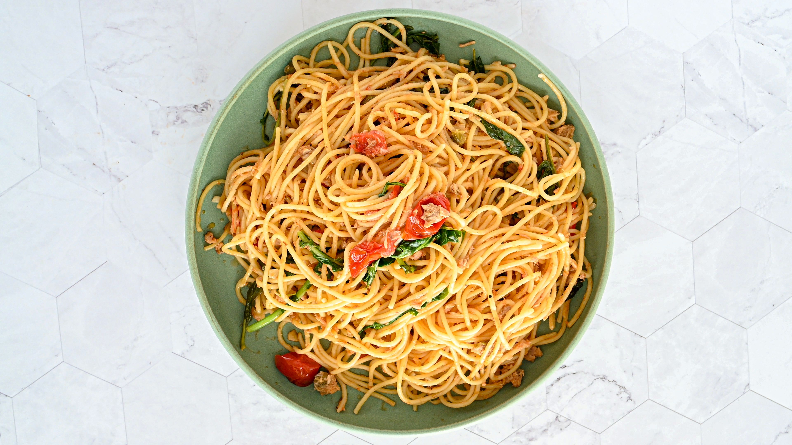

Cheese Pasta

Ingredients
- 1 pound angel hair pasta
-
1 (5.2 ounce) package garlic and herb cheese spread
- ¾ cup grape tomatoes, sliced (Optional)
- chopped fresh parsley for garnish (Optional)
- ½ cup reserved pasta water, or as needed
Directions
- Gather the ingredients.
- Bring a large pot of lightly salted water to a boil. Cook angel hair pasta in the boiling water, stirring occasionally, until tender yet firm to the bite, 5 to 7 minutes.
- Drain pasta, reserving 3/4 cup water ( you may not need it all).
- Pour 1/2 cup reserved water into sauce pan. Add cheese, whisking to combine until smooth. Add tomatoes and cook, no longer than 2 minutes. Add pasta back into the sauce. Garnish with fresh parsley.